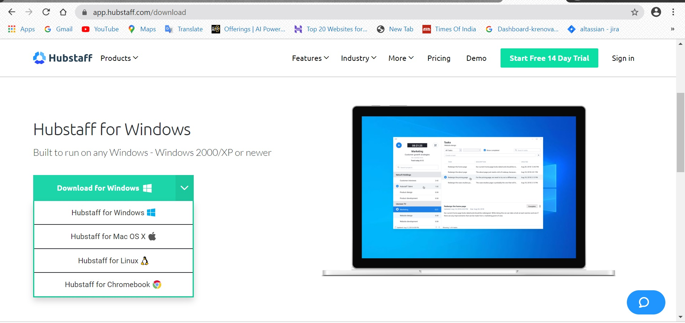
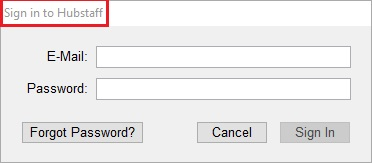
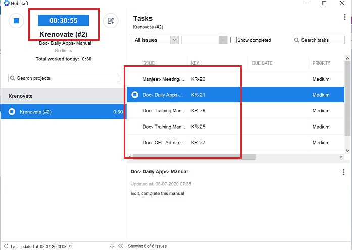

Hubstaff Desktop Client - Hubstaff Recorder¶
Introduction¶
Hubstaff's Desktop Client/app is an easy way to keep track of time worked. It helps you record your time spent on various activities.
App Download¶
Follow the below steps to Install and activate the app:
- Download the app from https://hubstaff.com/download

- It is compatible with various Operating Systems:

Install & Sign in¶
Install and sign in to the client with the Hubstaff user id and password.

Time Tracking¶
How the timer works¶
The Hubstaff Recorder App has two parts:
-
Left Side Panel
When you start the client and login, you’ll see:
-
Timer on top
- List of assigned projects.
-
Select the project you want to work on.

-
Right Side Panel
Once you have selected the project:
- You will see a list of tasks in the selected project.
- Start timer for the issue you have to work on.

Note: Task timer should ALWAYS be started on the right side.
How the activity is recorded¶
All the time recorded in the app is automatically visible on the Hubstaff Web page.
Check your “Activity” page on Hubstaff Web for screenshots, time and activity percentages.

Important Tips¶
Few things to keep in mind:
- When you start the Hubstaff Recorder, all your assigned tasks will be visible there.
- Time is recorded task wise; click only on the task you have to work on.
- This app is to track your task wise time; in case of more activities on the task, login to your Jira account.
- You can start/stop the timer any time when you want.
Help & Guides¶
For more information on Hubstaff, follow the link below:
To Do List¶
When you complete the above training, do the below task to mark your training complete.
- Share a screen shot of the assigned task which shows on the Recorder.
- Try to record time for the assigned task by starting the timer for that particular task.